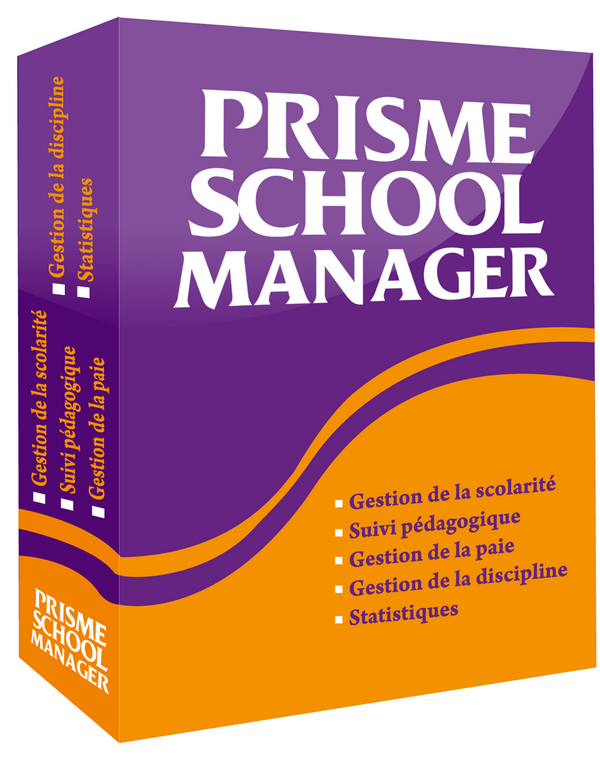
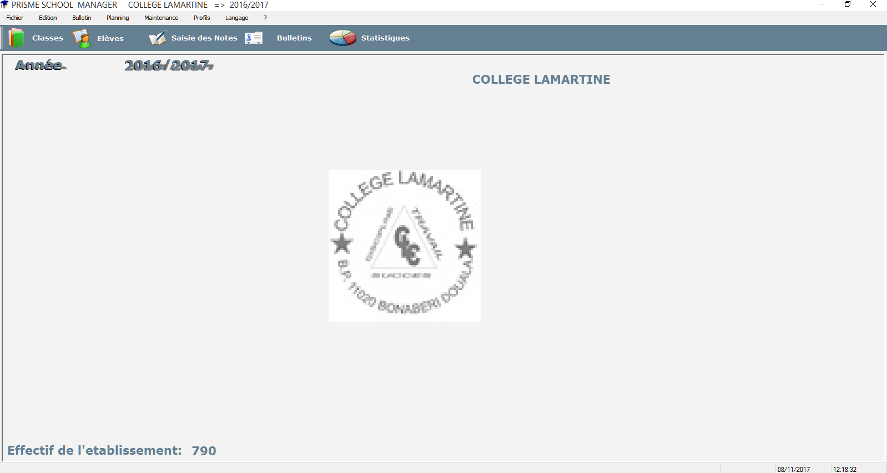
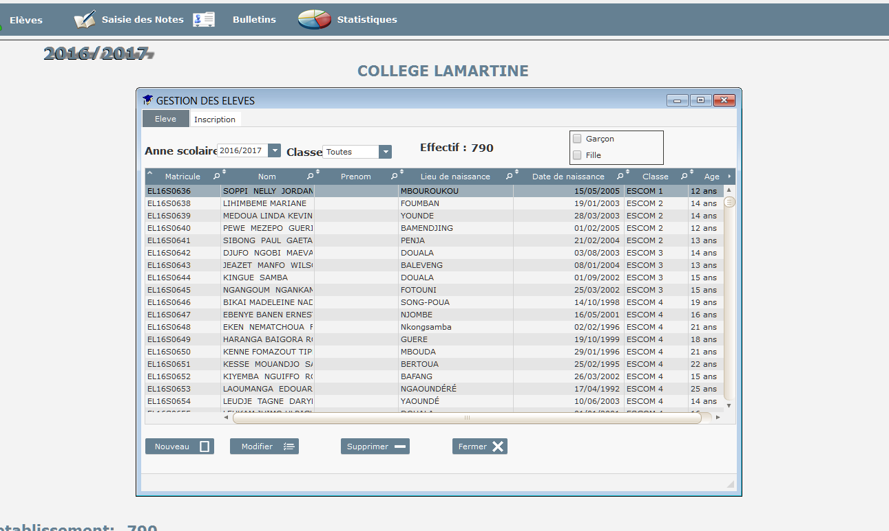
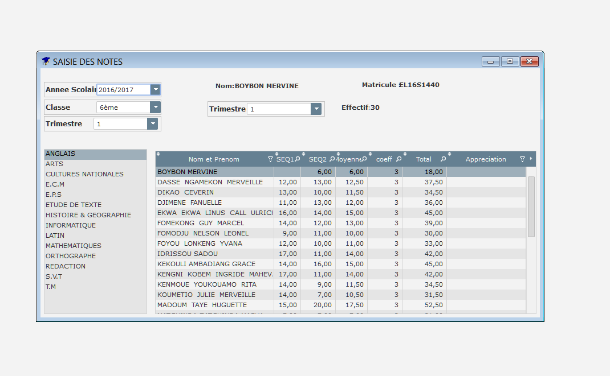
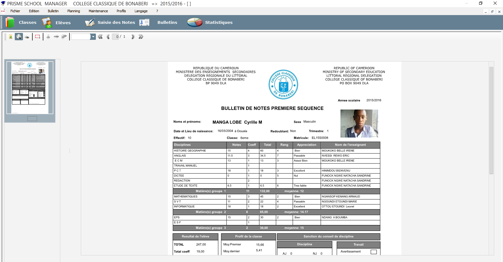
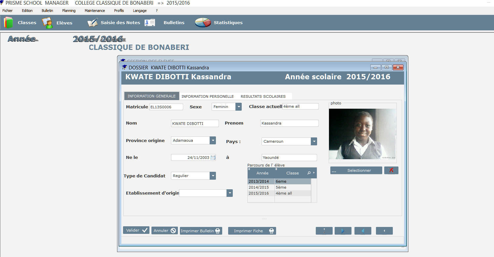

PRISME SCHOOL MANAGER

Le logiciel PRISME SCHOOL MANAGER (PSM) est un logiciel conçu spécialement pour la gestion des établissements scolaire au cameroun et en Afrique centrale

Fenêtre d'accueil

Table des élèves
Presentation
PSM est un logiciel totalement personnalisable qui va changer et faciliter l’administration et la gestion de votre établissement scolaire. Il s’agit principalement de :
- • La gestion des concours d’entrée ;
- • La gestion de la scolarité ;
- • La gestion des Evaluations ;
- • La gestion de la Pédagogie.
En vous procurant PRISME SCHOOL MANAGER, je vous offre d’autres services qui vous accompagneront pendant 09 (neuf) mois dans l’accomplissement de vos missions, entre autres : :
- L’achat et maintenance du matériel informatique ;
- Un module d’envoi de SMS en direction des parents ;
- • La gestion des photos 4x4 pour les examens officiels
- La création et l’administration d’un site web personnalisé.
Plusieurs établissements nous ont fait confiance. Il s’agit notamment du : COLLEGE CLASSIQUE de Bonabéri, WISDOM COLLEGE Yaoundé ,CEFOP LAMARTINE Douala.

Saisie des notes

Bulletin de notes

Dossier élèves